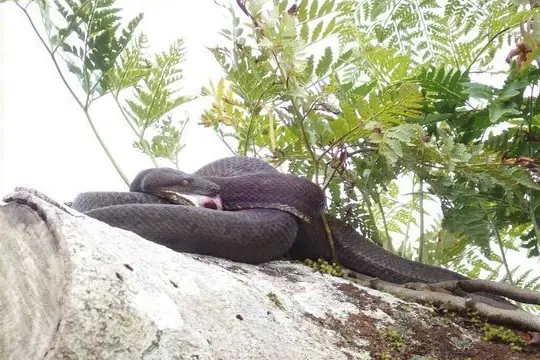
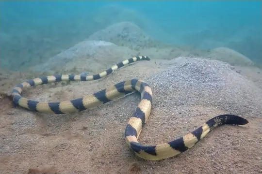
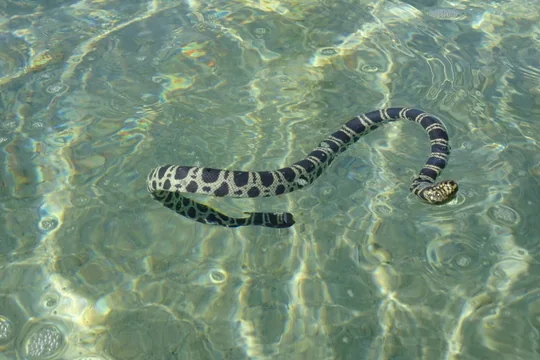
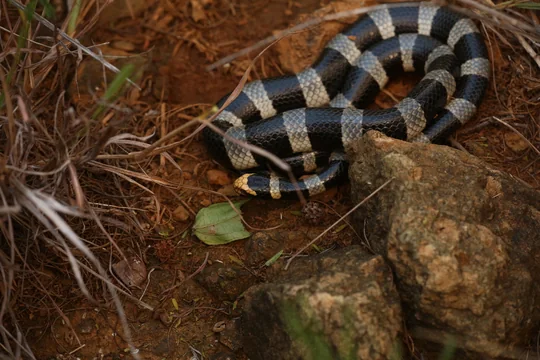
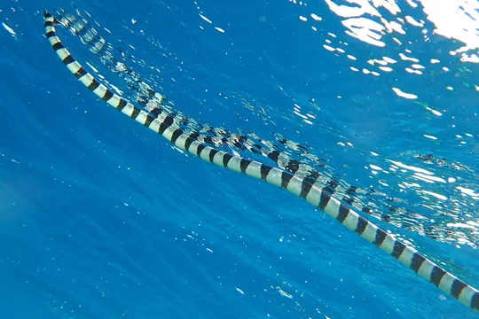

Snakes of New Caledonia
12 living snake species are recorded in New Caledonia in SnakeList: 10 venomous and 2 non-venomous, from 3 families.
- 12living species
- 3families
Danger to people · tap a number to show only those snakes
- 0mildly venomous
- 0giant constrictors
Harmful = dangerously venomous + giant constrictors. Harmless = not venomous and not a giant constrictor. Mildly venomous snakes have no serious bites to people documented. Any snake can bite.
New Caledonia is a territory, not a sovereign country; SnakeList lists it as a place of its own. These totals count the unique living snake species SnakeList records in New Caledonia. A species counts if it is recorded anywhere in the territory, so not every snake lives in every part of it.
In SnakeList’s checklist filters
How many of the 12 living species here each filter in the SnakeList app picks out – tap a number to show only those snakes.
Snake family2 types, 3 families
Type
Family
Habitats5 habitat groups
Habitats are estimated from where each snake is recorded and what kind of snake it is, as in the app; a snake can count in several.
Characteristics10 venomous, 1 constrictors
- 0constriction not documented
- 0snake eaters
Constrictor and Non-constrictor count only snakes whose family or genus is documented as constricting or not; the rest are not documented.
Other filters0 popular, 3 rare
- 0popular
- 0invasive
- 0extinct
Species
Showing 12 species

Bibron's Pacific BoaCandoia bibroni
Cogger's Sea SnakeHydrophis coggeri Egg-eating Sea SnakeEmydocephalus annulatus
Egg-eating Sea SnakeEmydocephalus annulatus
Greater SeasnakeHydrophis major- No photo yetLaboute's Sea SnakeHydrophis laboutei
- No photo yetLoyalty Islands Blind SnakeRamphotyphlops willeyi
 Olive Sea SnakeAipysurus laevis
Olive Sea SnakeAipysurus laevis Ornate Sea SnakeHydrophis ornatus
Ornate Sea SnakeHydrophis ornatus Yellow Sea SnakeHydrophis spiralis
Yellow Sea SnakeHydrophis spiralis
Yellow-Lipped Sea KraitLaticauda saintgironsi
Yellow-lipped Sea SnakeLaticauda frontalis- No photo yetHydrophis mcdowelli
No snakes in New Caledonia match.
New Caledonia’s snakes in numbers
- Families: Elapidae 10, Boidae 1, Typhlopidae 1.
- 1 is recorded in no other country or territory in SnakeList: Loyalty Islands Blind Snake.
How precisely they are recorded
Of the 12 living species recorded in New Caledonia, 8 are recorded by province in SnakeList’s data; 4 are recorded only for New Caledonia as a whole, so the province pages list them as possible rather than recorded. SnakeList records each species by province, not by exact spot, so a species listed for a province may live in only part of it.
Provinces
The provinces where SnakeList records snakes, with how many living species are recorded in each. Each page has its species, venomous snakes, families, the species found only there, its cities and neighbours.
- Loyalty Islands 4 species
- North 3 species
- South 6 species
No place matches that.
Cities
Its biggest cities, biggest first. SnakeList records snakes by province, not by city, so each city page shows the species recorded in its province and, separately, those only possible there - not species confirmed in the city.
- Nouméa South
No place matches that.